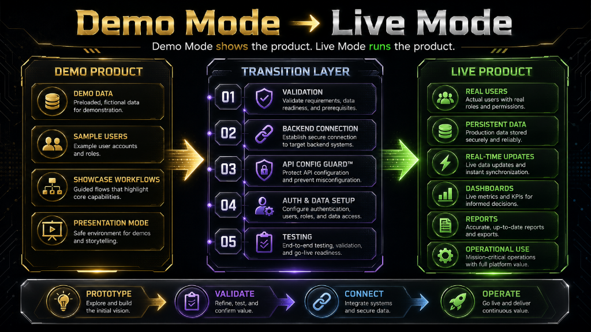

Demo Mode shows the product. Live Mode runs the product — once connected to a real backend with authentication, persistent records, and real-time sync.
What it is
TrustShield OS™ is an always-on reputation and crisis management platform — designed to help organisations monitor configured risk signals, assess emerging threats, coordinate response actions, and update field teams before reputation damage becomes uncontrollable.
Where it can be used
Corporate communications teams, PR agencies, public figures, brand management consultancies, legal firms, and any organisation where reputation is a critical business asset.
Why it was built
Reputation crises can emerge from social media, news coverage, review sites, or coordinated attacks within hours. TrustShield OS™ demonstrates a structured command approach to crisis-aware organisation management.
When it is useful
When an organisation needs to monitor configured people, brands, or topics for emerging risk signals — and coordinate an organised response before a situation escalates.
Who it helps
Communications directors, PR managers, risk officers, brand managers, legal teams, and corporate affairs professionals.
How it works
Features a reputation command dashboard for monitoring configured signals, assessing crisis risk levels, managing response workflows, and coordinating team actions — plus a mobile Response PWA for field team updates and evidence capture.
Key features
Architecture behind it
Refactored from the 4P3X base with reputation-sector data model, risk scoring logic, crisis escalation workflows, and monitoring integration points.
Demo Mode to Live Mode pathway
Demo Mode shows the full monitoring and response workflow with sample organisation and signal data. Live Mode connects real monitoring APIs, alerting systems, team communication tools, and persistent case records.
Demo Mode → Live Mode — visual pathway
Demo Mode shows the product. Live Mode runs the product. Each product has a clear pathway from working demo to live operational deployment.

Demo Mode shows the product. Live Mode runs the product.
What it can become next
Could expand to include real-time social listening, media monitoring API integrations, legal coordination modules, and AI-drafted response suggestions.
Investor and employer relevance
Demonstrates commercial awareness of high-value professional services markets — PR, corporate affairs, and reputation management — where structured digital tools can command significant value.